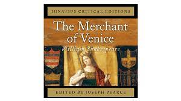

The Merchant Of Venice
 The Merchant of Venice* contains some of Shakespeare’s most memorable and complex characters. While Antonio is central to this play — after all, he is normally considered the person for whom it is named — audiences are inevitably fascinated by Shylock, the Jew who sues Antonio for a lethal “pound of flesh” in return for unpaid loans, and by Portia, the wealthy heiress, who marries Antonio’s friend Bassanio and saves Antonio’s life in a dramatic courtroom scene.
CHARCTERS
Shylock
Antonio
Bassaino
Portia
Gratiano
Nerissa
Jessica
Salarino
Prince of Morocco
Salerio
Solanio
Old Gobbo
Launcelot Gobbo
Tubal
Stephano
Prince of Aragon
Duke of Venice
Lorenzo
Balthazar
ACT I: SCENE I
ANTONIO
In sooth, I know not why I am so sad.
It wearies me; you say it wearies you.
But how I caught it, found it, or came by it,
What stuff ’tis made of, whereof it is born,
I am to learn.
And such a want-wit sadness makes of me,
That I have much ado to know myself.
SALARINO
Your mind is tossing on the ocean,
There, where your argosies with portly sail,
Like signors and rich burghers on the flood—
Or, as it were, the pageants of the sea—
Do overpeer the petty traffickers
That curtsy to them, do them reverence
As they fly by them with their woven wings.
SALANIO
Believe me, sir, had I such venture forth,
The better part of my affections would
Be with my hopes abroad. I should be still
Plucking the grass to know where sits the wind,
Peering in maps for ports and piers and roads.
And every object that might make me
Misfortune to my ventures out of doubt
Would make me sad.